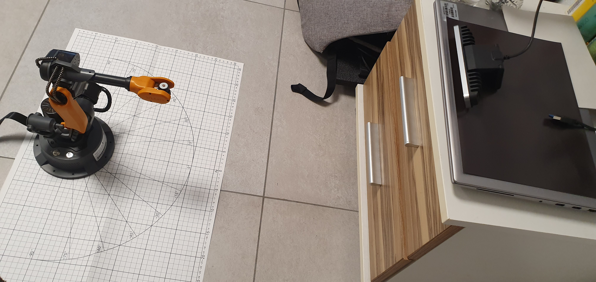

Wlkata Mirobot and Intel RealSense F200 IntegrationThis extended guide outlines a comprehensive process of integrating the Wlkata Mirobot robotic arm with the Intel RealSense F200 depth camera to achieve advanced capabilities such as 3D vision-based object manipulation, environment perception, and task automation using Vision-Language Models (VLMs). 1. Intel RealSense F200 Depth CameraThe Intel RealSense F200 camera is an early-generation depth sensor originally designed for interactive computing. Although it is no longer officially supported, careful integration using archived drivers and legacy SDKs can still unlock its potential as a low-cost depth source for robotics research. Researchers can leverage the F200's infrared-based structured light system for near-field depth sensing, enabling the robot to understand its environment's geometry. 1.1 Camera Appearance and SpecificationsThe F200 camera is compact and well-suited for desktop scenarios. It typically operates best within a range of approximately 0.2–1.2 meters. While newer RealSense models (like D400 series) offer higher fidelity and broader support, the F200 still provides valuable data for small-scale manipulation tasks. 1.2 Depth and RGB OutputThe camera's dual output includes:
In practice, the depth stream allows the Mirobot to identify object positions in 3D space, while the RGB image supports color-based classification. Using these modalities together is crucial for robust object detection and scene understanding. 
The example above demonstrates real-time depth capture. Darker regions represent points further from the camera, while lighter or more saturated colors denote closer surfaces. 1.3 Setup and InstallationTo use the F200's depth functionality on a modern Windows environment, follow these steps:
Once installed, you can verify the depth stream using the legacy RealSense SDK's sample applications. Although not supported by the modern RealSense SDK 2.0, the F200 can still be integrated into contemporary workflows by using the legacy drivers and bridging solutions.

The sketch above visualizes a possible angled camera placement. Unlike a top-down setup, an angled camera requires thorough calibration to ensure accurate mapping from image coordinates to the robot's workspace coordinates. 2. Wlkata Mirobot Robotic ArmThe Wlkata Mirobot is a compact 6DoF robotic arm often used for education, prototyping, and research. Its precision and small footprint make it an excellent platform for experimenting with vision-guided tasks. By integrating depth sensing from the F200, we enable the Mirobot to perform more complex operations like object sorting by color, shape, or location, and eventually, even higher-level tasks commanded through natural language. 2.1 Characteristics
These specifications ensure that the Mirobot can reliably pick up small objects such as colored cubes and place them at designated coordinates. 2.2 Gripper TypesThe Mirobot supports multiple end-effectors:
2.3 Programming and SimulationWlkata Studio provides a GUI-based approach to controlling the robot. For advanced operations, we recommend leveraging Python APIs, ROS (Robot Operating System) integration, or custom inverse kinematics solutions. By working at the code level, one can integrate Computer Vision, AI-based planning, and Vision-Language Models (VLMs) that enable commands like: "Robot, please pick the red cube from the left corner of the table and place it next to the blue cube." Such a request can be parsed using a large language model, and combined with vision-based object detection and calibration, the robot can interpret and execute the task. 

2.4 Workshop RoadmapIn our UnitedAI workshop series, participants followed a roadmap from basic robot control to advanced AI-driven tasks. This included step-by-step calibration, code integration, and VLM fine-tuning to interpret and execute instructions. 3. Calibration: A Cornerstone of IntegrationProper calibration ensures that what the camera "sees" can be accurately translated into real-world robot coordinates. Because the camera is placed at an angle, a simple 2D-to-2D homography is insufficient. Instead, we must perform a robust 3D calibration:
3.1 Using Checkerboards and ArUco Markers
Checkerboards are commonly employed for camera calibration due to their high contrast and geometric regularity. By placing a checkerboard at known positions and detecting its corners in the camera image, we gather correspondences between 2D image points and 3D world points. This data feeds into Similarly, ArUco markers provide easily detectable fiducials with known geometry. By scattering a few ArUco markers around the workspace and measuring their known positions relative to the robot base, we can robustly compute the camera-to-robot transformation. This process is critical for ensuring that the robot can reach for objects with millimeter-level accuracy. Figure: Calibration pipeline — The camera captures a pattern, corners are detected (2D), known 3D coordinates in the robot frame are matched, and solvePnP finds the transform. 3.2 Commands and Code SnippetsBelow is a Python snippet demonstrating how to capture frames, detect ArUco markers, and run solvePnP. This can be integrated into a broader calibration routine:
After obtaining the rotation and translation vectors ( 4. Vision-Language Model (VLM) IntegrationWith the calibration set and depth stream working, the next challenge is to integrate a Vision-Language Model (VLM). Advanced models—similar to those developed by Google, OpenAI, or NVIDIA—can process both textual and visual inputs, enabling natural language commands like: "Sort all cubes by their color and arrange them in ascending order of red, green, and blue." To implement this:

Figure: VLM pipeline — The camera captures an image, cubes are detected, known 3D coordinates in the robot frame are matched, and user prompt is passed to the VLM together with coordinates and an image. 5. References
|